Yoğurtlu Gözleme
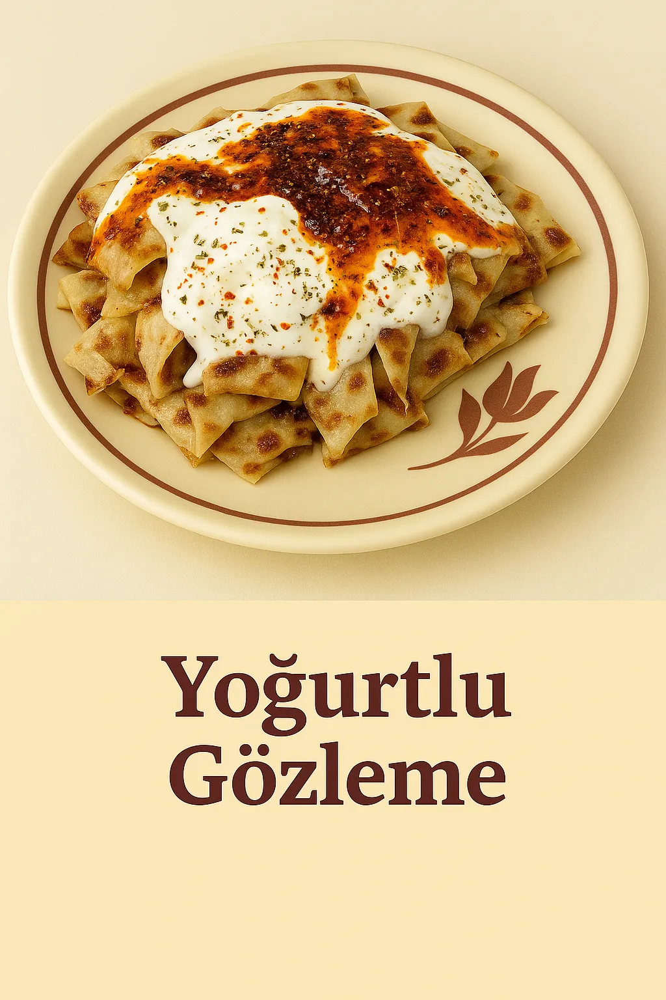
Prix 5,00 €
Daha fazla
Seçtiğiniz gözleme, tam yağlı süt ve tuzla hazırlanmış ev yapımı yoğurt, eritilmiş tereyağı ve hafif acılı domates sos ile servis edilir. Gerçek bir Türk lezzeti.

Prix 5,00 €
Seçtiğiniz gözleme, tam yağlı süt ve tuzla hazırlanmış ev yapımı yoğurt, eritilmiş tereyağı ve hafif acılı domates sos ile servis edilir. Gerçek bir Türk lezzeti.
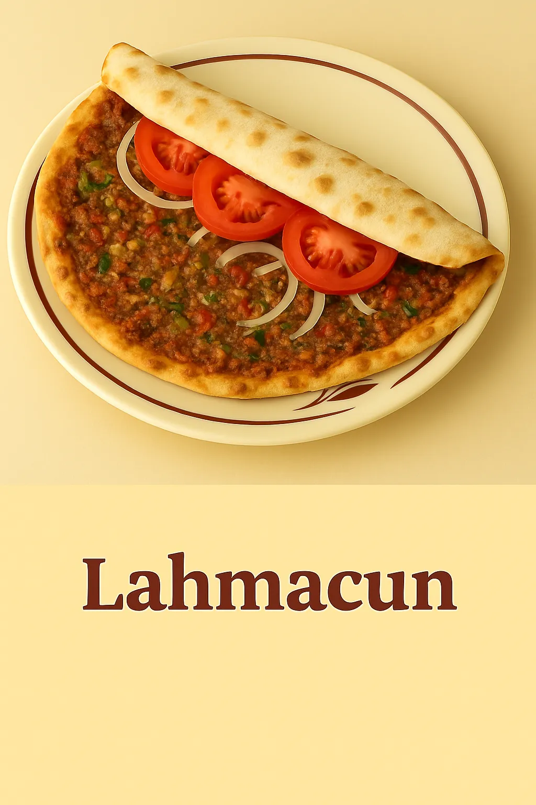
Prix 6,00 €
İnce hamur üzerine kıyma, domates, yeşil ve kırmızı biber, soğan, sarımsak, maydanoz ve doğu baharatlarından oluşan karışım. Damakları uyandıran baharatlı bir klasik.
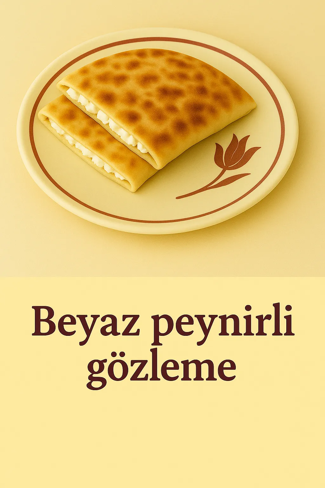
Prix 4,00 €
El açması hamurun içinde beyaz peynir ve taze maydanoz. Sade ama her zaman lezzetli.

Prix 4,00 €
Patates püresi, karamelize soğan, tatlı biber ve baharatlarla hazırlanmış iç harç. Her lokmada doyurucu ve lezzetli.
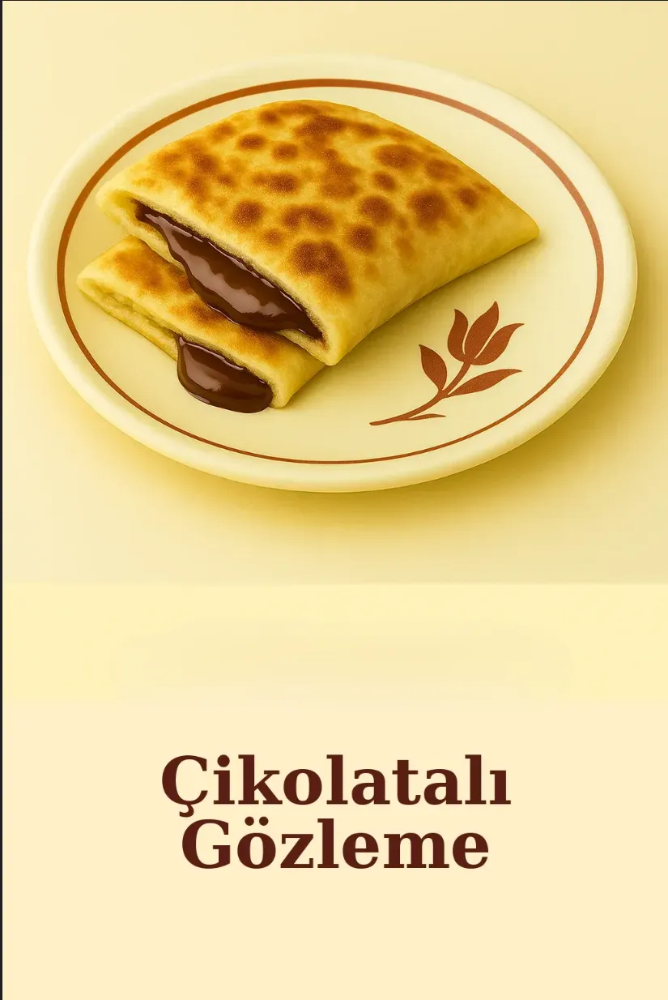
Prix 4,00 €
İnce hamura sarılmış, erimiş çikolata parçaları ile sıcak servis edilir. Hem çıtır hem içi akışkan tatlı bir kaçamak.

Prix 4,00 €
Yoğurt, kimyon, paprika ve sarımsakla marine edilmiş tavuk fileto, özenle ızgaralanır. Et sevenler için baharatlı bir seçenek.

Prix 4,00 €
Rendelenmiş kabak, karamelize soğan ve hafif tatlı baharat karışımı. Beklenmedik tatlı bir dokunuş.

Prix 4,00 €
Zeytinyağında sarımsak ile sotelenmiş mantar dolgusu. Her lokmada topraksı ve doyurucu.

Prix 4,00 €
Hafif sotelenmiş ıspanak, soğan ve tatlı biber. Tat ve hafifliğin dengesi.

Prix 5,00 €
Kıyma, soğan, biber, domates ve baharatlarla yavaşça kavrulmuş iç harç. Her lokmada yoğun ve cömert bir tat.

Prix 3,00 €
Domates, salatalık, kırmızı soğan, maydanoz ve zeytinyağı karışımı. Basit ama her zaman lezzetli.
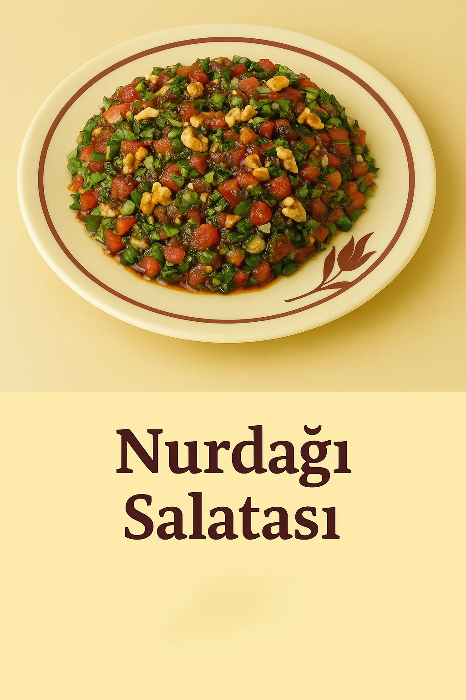
Prix 4,00 €
Çıtır ceviz, taze domates, soğan, maydanoz ve nar ekşili sos. Kaçırılmayacak bir Türk klasiği.

Prix 3,00 €
Marul, havuç, domates, salatalık ve hafif ev yapımı sos. Mevsim sebzelerine göre seçilir. Tazeliği tabağınızda hissedin.

Prix 3,00 €
Roka, taze limon, zeytinyağı ve bir tutam sumak. Damakları uyandıran keskin bir lezzet.

Prix 4,00 €
Taze marul, salatalık, maydanoz, limon sosu. Sadelik içinde yeşilin gücü.

Prix 3,00 €
Rendelenmiş havuç, sarımsaklı yoğurt, zeytinyağı. Yumuşak ve kremsi, harika bir eşlikçi.

Prix 3,00 €
Taze semizotu, sarımsaklı yoğurt. Hafif ve ferahlatıcı bir tabak. Yazın sağlıklı ve serin seçeneği.

Prix 2,00 €
Yoğurt, soğuk su ve tuzla hazırlanan geleneksel Türk içeceği. Sıcak yemeklerin yanında ferahlatıcı bir eşlikçi.

Prix 2,00 €
Katkı maddesi içermeyen %100 doğal vişne suyu, hafif ekşi ve tatlı bir tat. Anadolu'nun meyveli ve serin lezzeti.
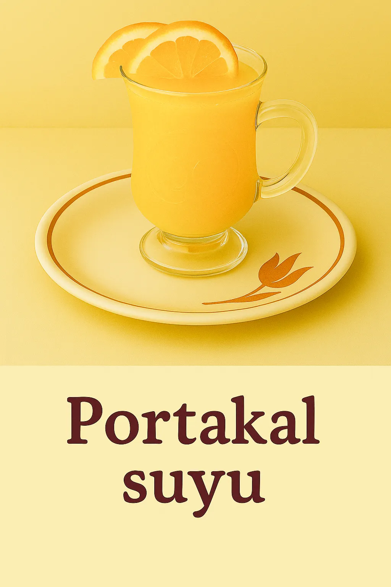
Prix 2,00 €
Taze sıkılmış portakal suyu, ilave şeker içermez, C vitamini açısından zengindir. Bir bardakta sağlıklı sadelik.
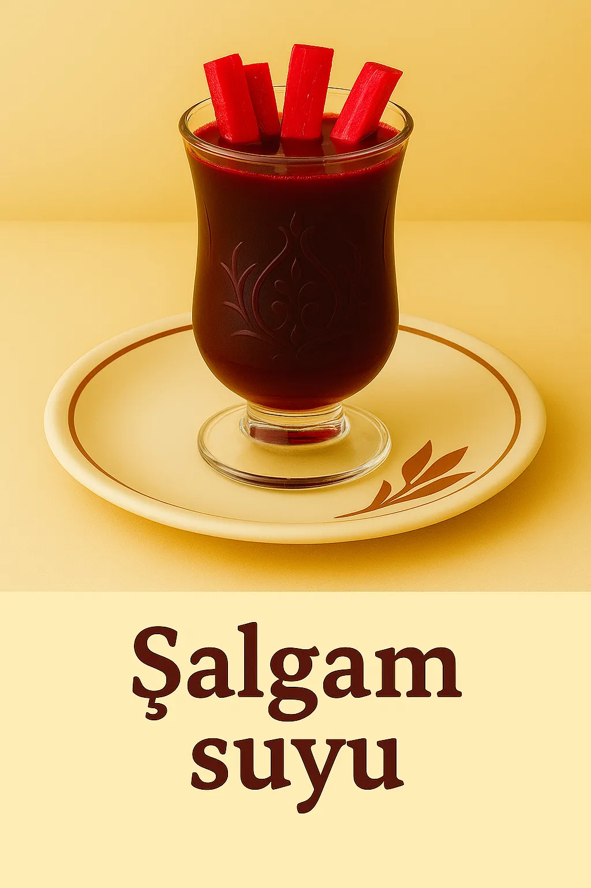
Prix 2,00 €
Turp, tuz, baharat ve bazen acı biberle hazırlanan geleneksel fermente içecek. Otantik Türk şalgamının gerçek tadı.

Prix 3,00 €
Demirhindi özü, şeker, limon ve soğuk su ile hazırlanır. Tatlı-ekşi, serinletici bir Osmanlı içeceği.

Prix 4,00 €
Çift demlikli çaydanlıkta yavaşça demlenen siyah çay. Bir küçük bardakta Türk misafirperverliğinin simgesi.

Prix 4,00 €
İncecik çekilmiş kahve, soğuk su ile cezvede pişirilir, süzülmez. Kadifemsi yoğunlukta, Osmanlı’dan miras bir tat.
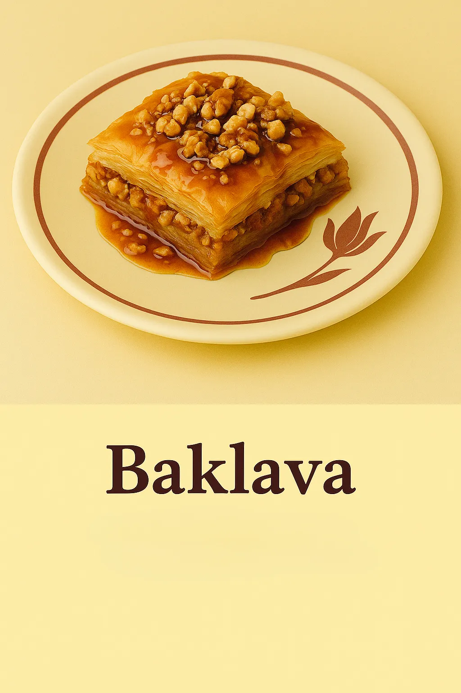
Prix 1,00 €
İncecik yufkaların cevizle buluştuğu, şerbetle tatlandırılmış geleneksel bir Türk tatlısı. Vazgeçilmez bir lezzet klasiği.
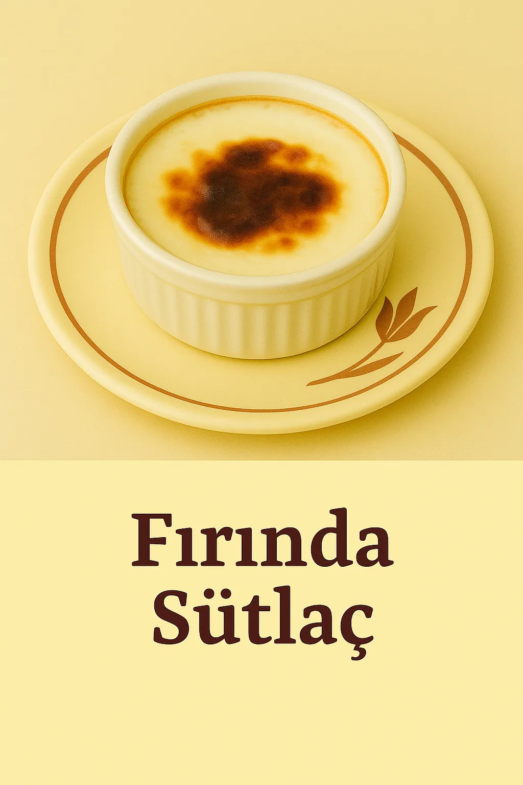
Prix 4,00 €
Üzeri hafif karamelize edilmiş, fırında pişmiş klasik sütlü tatlı. Soğuk servis edilir, yumuşacık bir tat.
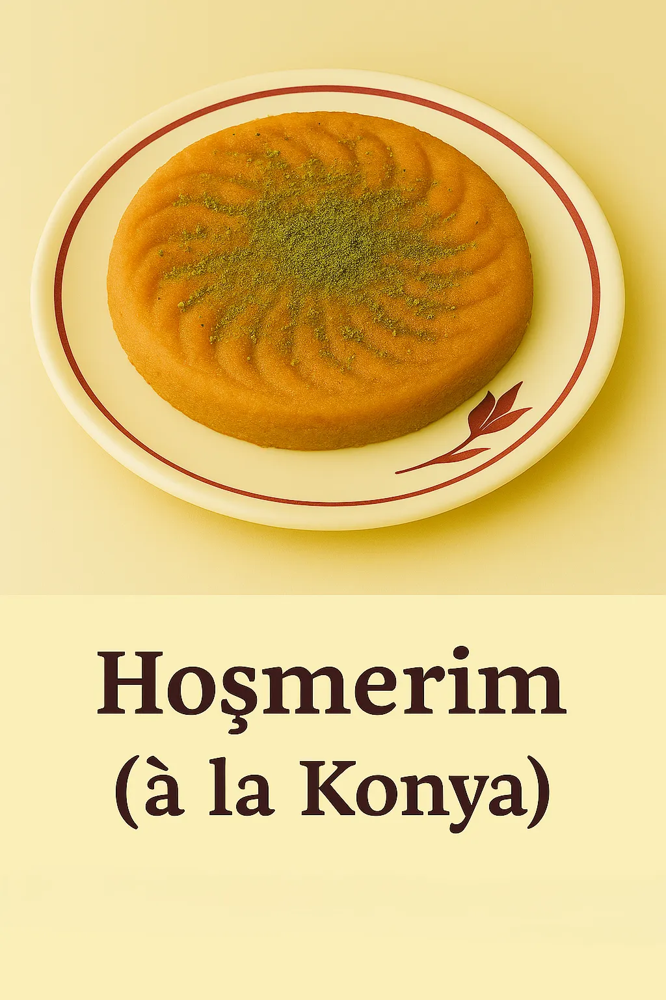
Prix 4,00 €
Peynir, irmik ve şeker ile hazırlanan, Konya’ya özgü geleneksel bir tatlı. Ağızda dağılan kıvamıyla nostaljik bir lezzet.
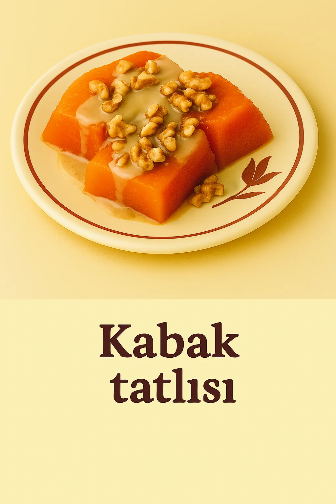
Prix 4,00 €
Şekerle pişirilmiş kabak dilimleri; isteğe göre ceviz veya tahin ile servis edilir. Sonbaharın en sevilen tatlılarından.

Prix 4,00 €
Tel kadayıf arasında eriyen peynir ile hazırlanan sıcak şerbetli tatlı. İçindeki peynirle sizi şaşırtacak!

Prix 4,00 €
İrmikle hazırlanan limon aromalı hafif kek, şerbetle tatlandırılır. Yemekten sonra hafif bir seçenek.